M 1 (Blingor’s Network | Foundations
Lecture - 37
Minimum Spanning Trees - Module 1 (Blingor’s Network | Foundations [SPOJ])
(Refer Slide Time: 00:11)
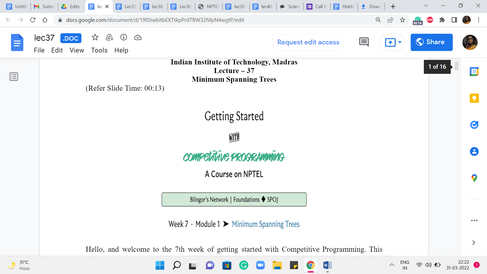
Hello, and welcome to the seventh week of Getting Started with Competitive Programming. This week we are going to be talking about ‘minimum spanning trees,’ which is yet another cool optimization problem in the context of graphs. This problem may, in fact, remind you of some of our discussions of single-source shortest paths.
But it turns out that it is really quite a distinctive problem in its own right, and we will contrast it with the shortest path problem as we go along. As usual, we will spend the first module laying down the foundations. We will discuss a couple of popular algorithmic approaches to this problem. They are usually referred to as Prim’s algorithm and Kruskal’s algorithm. As is the case with most of these algorithmic ideas for fundamental graph problems, these algorithms were also co-invented by other people.
But we will stick to these names because they are the standard textbook names, and you will have an easier time finding related material if you do it this way. But if you want to find out more about the history of this problem, then I would definitely recommend checking out the relevant chapter in the ‘algorithms text’ by Erickson. There is a link to it in the description of this video.
So, what we are going to do is, first, talk about minimum spanning trees – what the problem is, what we are required to do? We will talk about why it is different from, say, single-source shortest paths. In particular, we will talk about why a solution to SSSP may not actually serve as a solution for MST, even though it may be tempting to think of it that way. And then we will talk about Prim’s algorithm, which turns out to be an algorithm that has a flavor very similar to Dijkstra’s algorithm, again, making that connection with SSSP.
But really, the mechanics of it are subtly different. And hopefully, you will be able to see the differences and appreciate them. And finally, we will run this off with Kruskal’s algorithm. And you will see that the implementation of Kruskal’s algorithm relies heavily on the disjoint set union, which is something you have already seen in week four. So, that should tie up quite nicely. So, this module is divided into three segments corresponding to these three separate discussions, the introduction followed by Prim’s algorithm followed by Kruskal’s algorithm.
We will be testing both of these implementations using a problem on the sphere-online judge called Blingor’s network. It is a very direct ask for a spanning tree. So, all we have to do is make sure that we read the input carefully and then pass it on to the implementations of our algorithms.
Their problem statement promises large inputs, so this should be a good way to stress-test the efficiency of our implementations. So, with all that said, let us talk about minimum spanning trees now. I am going to introduce the problem to you through a story, which is a pretty commonplace thing for us to do.
(Refer Slide Time: 03:04, 03:52, 04:08 & 04:19)
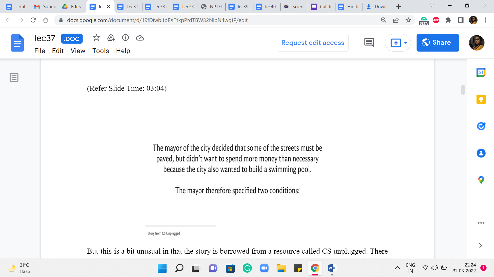
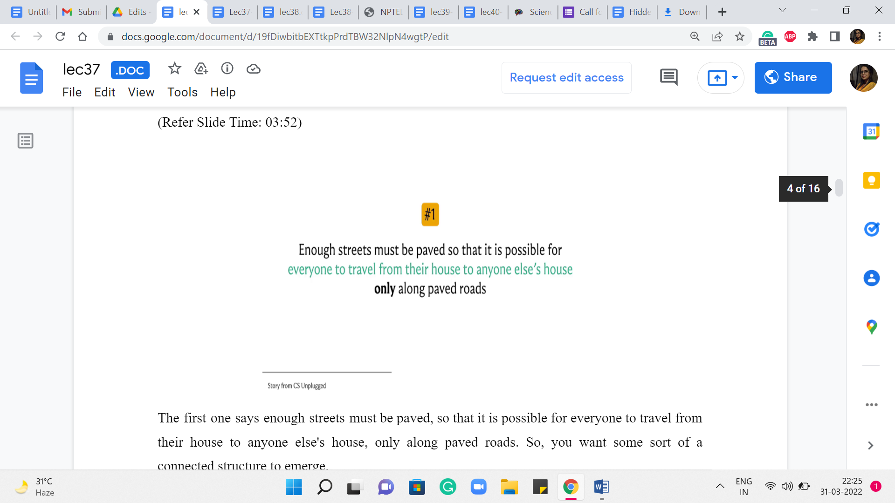
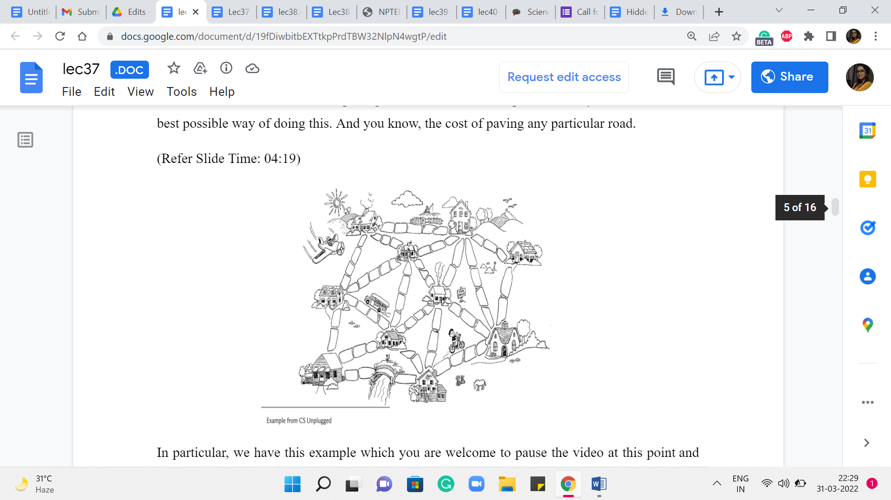
But this is a bit unusual in that the story is borrowed from a resource called CS unplugged. There is a link to this in the description. It is an amazing collection of activities and stories that introduce computational problems. So, if you are interested in follow-up stories, definitely check this out. But let us talk about this one first. So, once upon a time, there was a city that had no roads. Getting around the city was particularly difficult after rainstorms because the ground became very muddy. Cars got stuck in the mud, and people got their boots dirty.
So, the mayor of the city decided that some of the streets must be paved. But she did not want to spend more money than was necessary because the city also wanted to build a swimming pool – so they have a limited budget. The mayor, therefore, specified the following two conditions. The first one says enough streets must be paved so that it is possible for everyone to travel from their house to anyone else’s house only along paved roads. So, you want some sort of a ‘connected’ structure to emerge.
The second condition is that the paving should cost as little as possible. So, you want to find the best possible way of doing this. And, you know, the cost of paving any particular road, in particular, we have this example, which you are welcome to pause the video at this point and work out if you like. So, the cost of paving any particular road is proportional to the number of stones that are on that road in this picture. Now an obvious way of meeting the first condition is to just pave everything.
This will connect everyone to everyone. But notice that you can check that this does not meet the second condition because there are going to be some redundancies. At least in this particular example, you can see that there are many cycles, and that means that you can actually remove some of the roads and still remain connected. And therefore we know that it is not a minimum cost solution.
If you just wanted to optimize the budget, then, of course, you do not have to do anything at all, but then you do not actually connect the houses. So, you need something that is in between and it is not surprising that the structure that you are looking for is a tree because that is exactly what captures this notion of being minimally connected. And not only do you want a tree, (but) you (also) want a tree that, well, touches every vertex and has the smallest possible cost in terms of the sum of the weights of the edges.
In this case, the weights simply correspond to the cost of paving the road in question. Now for our convenience, let us replace this lovely sketch of the city with a more useful abstraction. It is pretty natural to want to model this using a graph with the vertices representing the houses, and an edge between two vertices, indicating that it is possible to, in fact, pave a road between the corresponding houses, and a number on that edge would record the cost of actually paving that road.
(Refer Slide Time: 05:51)
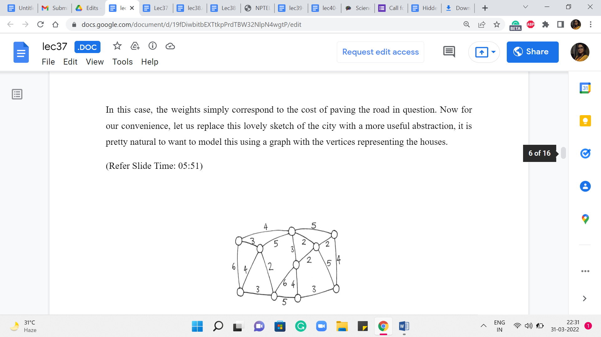
So, what we are looking for in this graph is a subgraph, which is a tree where the total costs of all the edges in the tree are as small as possible. So, please take a moment here and see if you want to work through this yourself in an ad hoc fashion.
Or if you are already familiar with a systematic approach, then perhaps try to apply it to this example and see what you get. We can tally notes later. Okay. So, before I get to actually talking about how we compute an optimal solution for this example, and also in general, I want to suggest an approach and I want you to think about whether it will work. Remember, I said that minimum spanning trees are reminiscent of shortest paths in the sense that shortest paths intuitively take us from one place to another as quickly as possible.
So, why not just start at one of our favorite houses, and just compute the shortest paths to every other vertex. Now perhaps this can be used as a spanning tree. Well, it is going to be a valid spanning tree for sure because you are going to find paths to every other vertex. And this collection of paths can be shown to be acyclic. But on the other hand, the thing to really think about is, does this have the smallest possible cost among all spanning trees?
It is fairly easy to come up with examples where starting from a particular house may just be a bad idea. But we can improve on this idea a little bit, we can say, well, let us just try stopping from every possible house, just like we did for APSP. Our first approach for APSP was to run SSSP on every vertex. So, let us just try and do that. For every vertex in the graph, we figured out the shortest path tree, which is just computing the shortest paths to every other vertex.
And then we take the one that is the best among all of these ‘n’ options. Would this work? Just think about whether this would make sense. I think it is a really instructive exercise to play around with some examples. And I think this really emphasizes the distinction between the goals of shortest paths versus spanning trees. Although at some level, they are similar in the sense that you are trying to optimize for somehow some sort of reachability.
But the style in which you are optimizing for reachability is relatively local in SSSP, and somewhat more global in MST. And this really does make a difference. So, feel free to pause here and see if you can figure out this puzzle. And when you come back, we will talk about it more. So, since I have been talking about the contrast between these two problems, the answer should come as no surprise to you. Just trying SSSP from every vertex will not solve the MST problem for you.
(Refer Slide Time: 08:59)
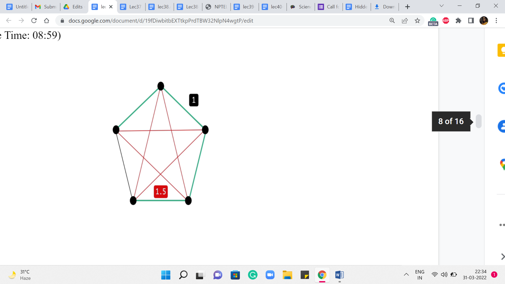
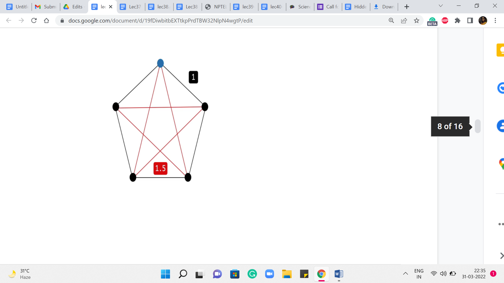
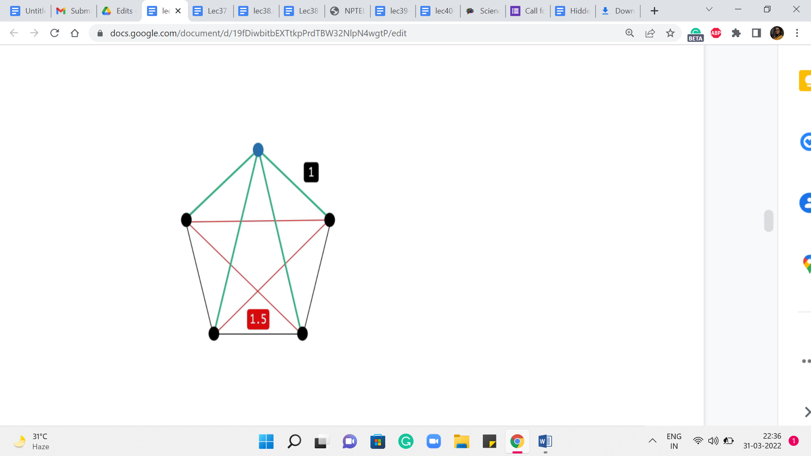
Let us take a look at this example. So, what we have here is a complete graph on five vertices. The red edges on your screen have a weight of 1.5, while the black edges have a weight of 1. If you think about a solution to the minimum spanning tree problem on this graph, then you can probably predict that any minimum spanning tree actually looks like a path on this outer rim. It just leaves out one edge and takes on all the rest. This is the best that you can hope for.
On the other hand, if you were to start off an exploration based on, say, Dijkstra to perform SSSP from any vertex, so let us pick the one on the top here, for instance, highlighted in blue. Think about what would Dijkstra do here? Well, you are going to get the two neighbors first, for sure. That is the best way of getting to those. But for the two vertices that are at the bottom, the best way to get to them is not via the outer rim. It is actually via the direct edge.
So, your shortest-path tree will look something like this, and that is going to be the same story no matter which vertex you start from. So, hopefully, this example illustrates the key difference between our goals with a single-source shortest path versus a minimum spanning tree. So, as you can imagine, MSTs will require a slightly different approach. Although one of the popular ways of finding MST, which is via Prim’s algorithm, feels a lot like Dijkstra.
So, it is a common question as to whether they are really different. And I wanted to get that out of the way up front by concretely showing you that it is indeed a slightly different problem. Now, before talking specifically about either Prim’s algorithm or Kruskal’s algorithm, I want to make some comments about a generic MST algorithm.
(Refer Slide Time: 10:44 & 11:06)
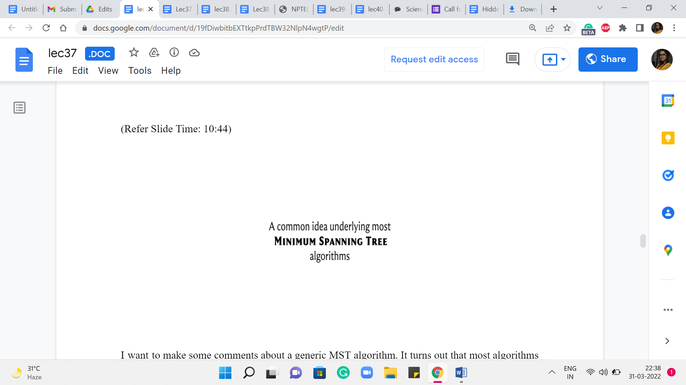
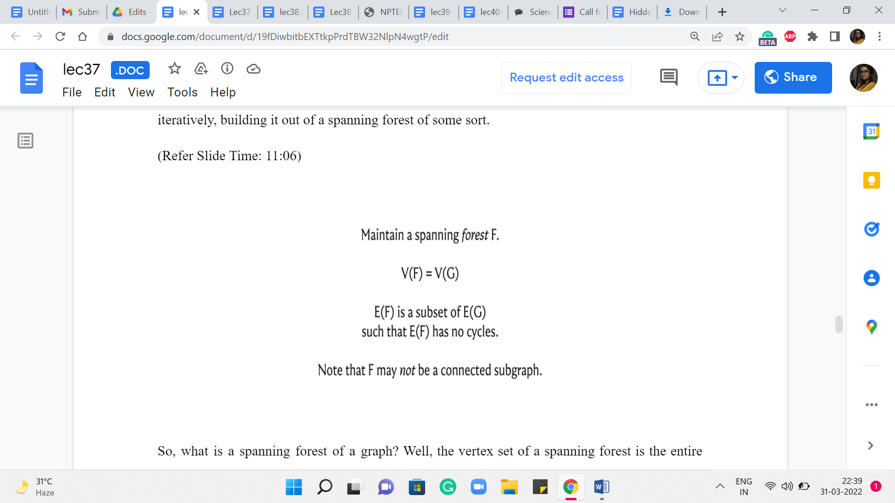
It turns out that most algorithms can be fit into this framework in some form or fashion. So, it is just a useful way to think about MST approaches. So, what you typically want to do is grow a minimum spanning tree by iteratively building it out of a spanning forest of some sort.
So, what is a spanning forest of a graph? Well, the vertex set of a spanning forest is the entire vertex set of the base graph that you are working with. But the edge set is essentially some acyclic subset of edges. There is no requirement that these edges should form a connected subgraph. That is what makes a spanning forest different from a spanning tree. So, you think of it as a collection of trees on the vertex set of G.
And some of these trees could be trivial. In particular, they could be isolated vertices. In fact, most algorithms would start with a spanning forest, which is simply all the isolated vertices in graph G. Now, of course, not every algorithm starts here. So, for instance, you could quite naturally think about your starting point as the entire graph G, all the vertices, and all the edges. And then you could try to erase edges away until you are actually left with a spanning tree.
But the approach that we are going to be talking about will be building up to a solution as opposed to chipping away at the whole graph till you are left with something minimal. So, as I said, our generic view is that we are trying to iteratively build up a spanning forest till it evolves and matures to being a single spanning tree.
(Refer Slide Time: 12:22, 12:41 & 12:54)
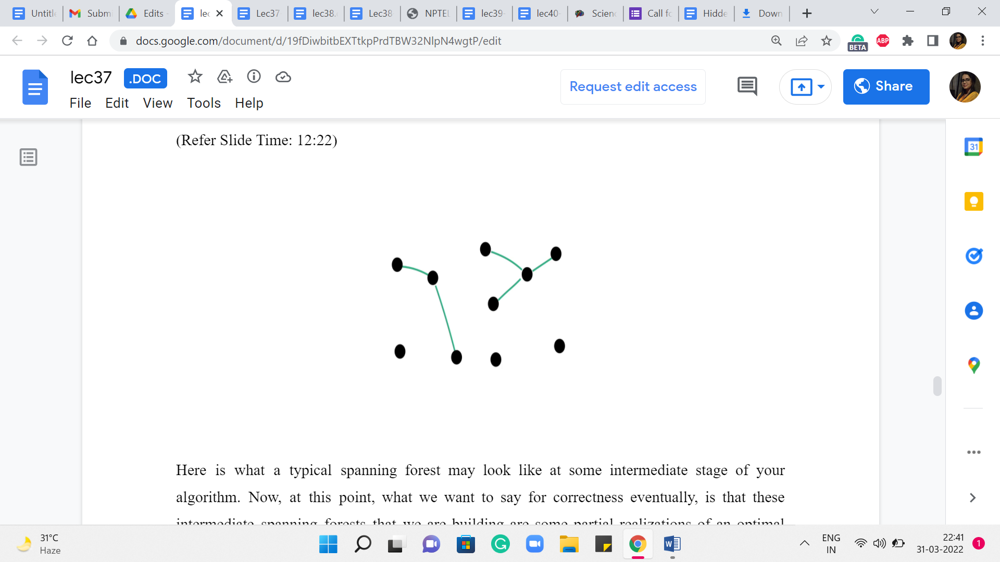
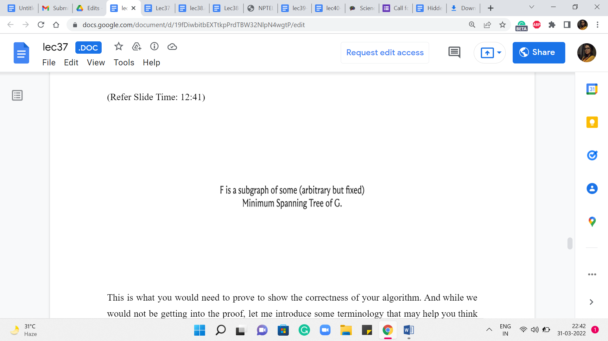
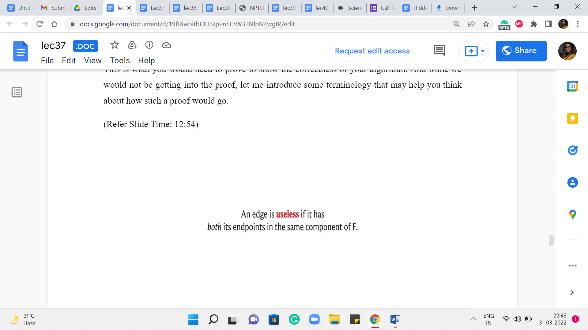
Here is what a typical spanning forest may look like at some intermediate stage of your algorithm. Now, at this point, what we want to say for correctness eventually, is that these intermediate spanning forests that we are building are some partial realizations of an optimal solution that exists somewhere.
This is what you would need to prove to show the correctness of your algorithm. And while we would not be getting into the proof, let me introduce some terminology that may help you think about how such a proof would go.
So, first, when you have a spanning forest, let us classify the edges into a couple of useful categories. The first one is the category of useless edges.
(Refer Slide Time: 13:05, 13:28 & 13:54)
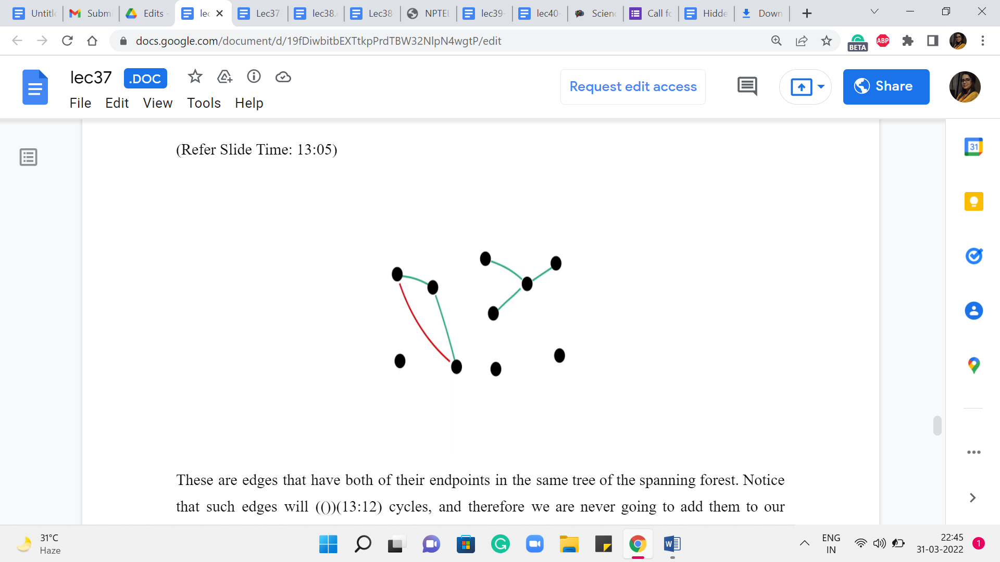
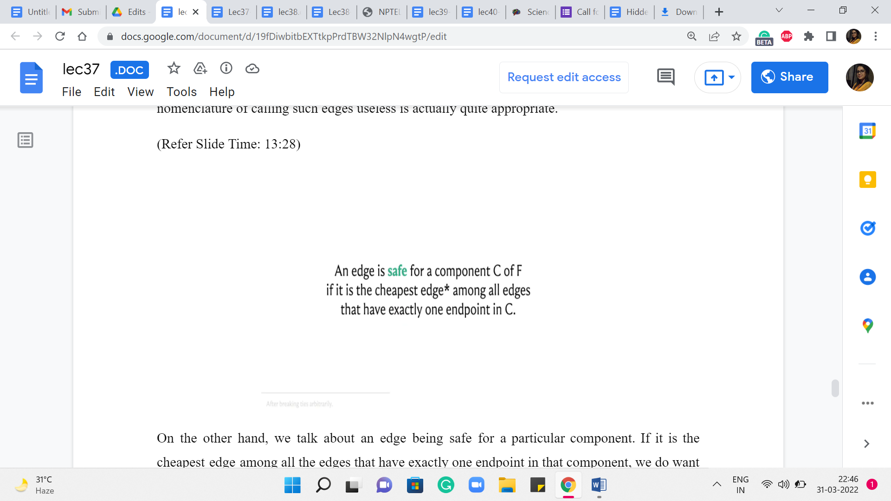
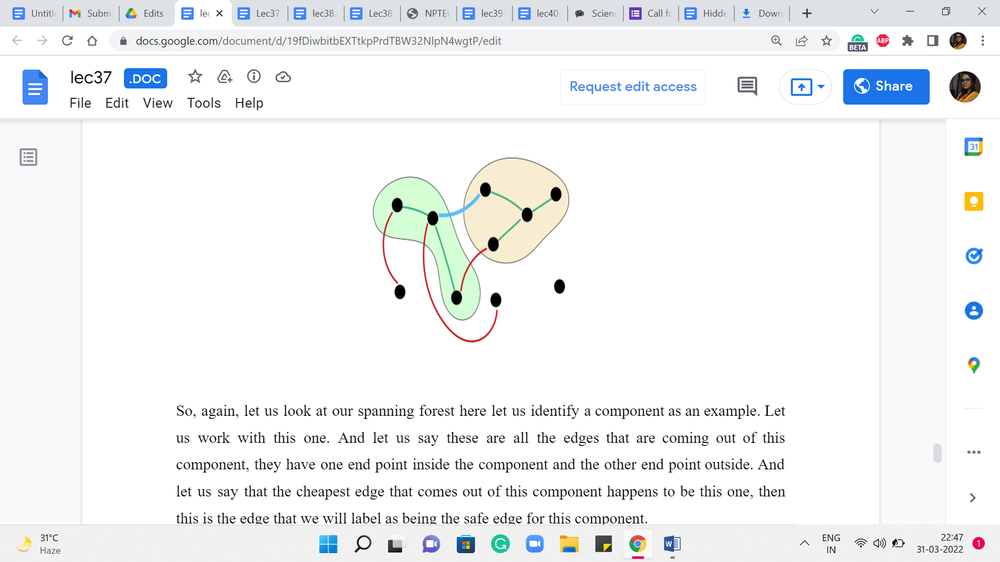
These are edges that have both of their endpoints in the same tree of the spanning forest. Notice that such edges will induce cycles, and therefore we are never going to add them to our solution if we are committed to extending the solution that we have built up so far. So, the nomenclature of calling such edges useless is actually quite appropriate.
On the other hand, we talk about an edge being safe for a particular component if it is the cheapest edge among all the edges that have exactly one endpoint in that component. We do want to talk about uniquely identifying the cheapest edges. So, if there are multiple cheapest edges that are getting out of a component, then we will have some previously agreed upon tie braking mechanism.
So, again, let us look at our spanning forest here. Let us identify a component as an example. Let us work with this one. And let us say these are all the edges that are coming out of this component. They have one endpoint inside the component and the other endpoint outside. And let us say that the cheapest edge that comes out of this component happens to be this one. Then this is the edge that we will label as being the safe edge for this component.
Now, one thing to observe is that the same blue edge may not be the safe edge for the other component that it is incident to. So, this yellow component here may have a different safe edge going out of it to some other component. But notice that once you do collect all the safe edges incident on all the components, then they must together be acyclic. Imagine that you do have a cycle among the safe edges.
Just start traveling on this cycle. You will notice that you must experience that the weights in fact decrease as you go along. So, you will get a contradiction by the time you hit the end of the cycle. So, just think about this a bit. And I just want you to preserve this intuition that all the safe edges at any stage of your algorithm must, in fact, be acyclic. And in fact, you can show which we will come to in a moment that these safe edges are called safe because they actually do belong to an optimal MST. So, you can pick them without thinking.
(Refer Slide Time: 15:22 & 15:36)
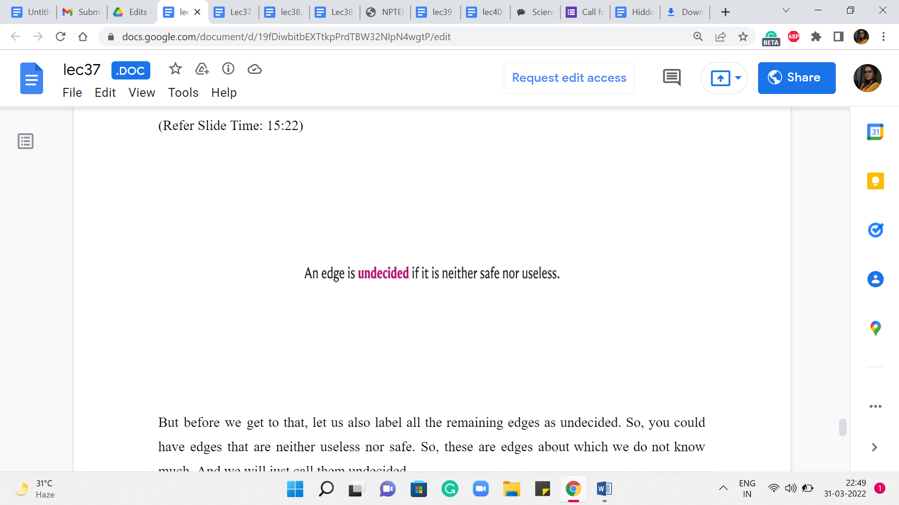
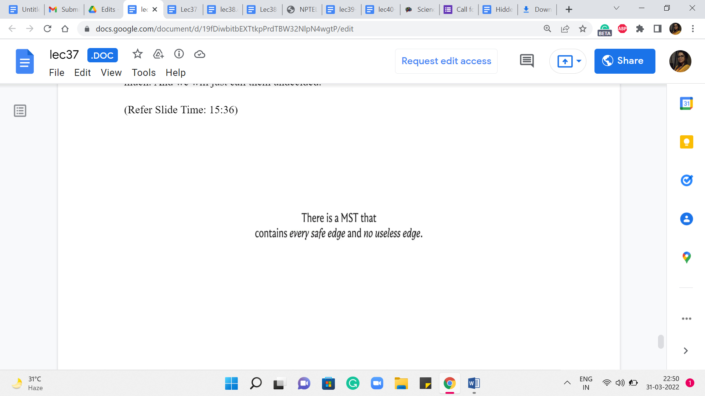
But before we get to that, let us also label all the remaining edges as undecided. So, you could have edges that are neither useless nor safe. So, these are edges about which we do not know much, and we will just call them undecided.
So, the key to the mechanics of most algorithms is the (following) fact that there is going to be an optimal solution, which does not contain any (of the) useless edges and contains every safe edge at every iteration of your algorithm. As I said, one intuitive thing to appreciate is that adding the safe edges will not violate the structure of the subgraph that you are looking for – the safe edges are already acyclic. But it does require proof that these are the best edges for your solution in terms of the cost.
In fact, what we are doing here has a really strong greedy vibe to it. We are seemingly focusing on edges that are locally the cheapest with respect to a component. And it is not obvious at all, that this would be the right thing to do long term. But it turns out that it is and once you know the correctness of the statement, then an algorithm, in fact, naturally suggests itself. Right. What you could do is start with all the isolated vertices, identify all the safe edges. This just amounts to going to every vertex and asking who is the neighbor that is the closest to you.
And once you have the answer to all of these questions, then you (just) have identified all the safe edges so you can freely add them to your solution. If at this point your graph becomes connected, that is fantastic. If not, and it may not be in fact. You can think of examples where you do this once, and you could be left with a graph that has as many as n by 2 components, for instance. So, your graph may not be connected.
But you could just repeat this process. You go to every component, and you ask, what is the cheapest edge that is incident on you? Again, having identified the safe edges, just add them to the solution. And repeat this until your graph in fact becomes connected. You can show that in every step, the number of components will in fact go down by half. So, the number of iterations that you have to repeat this process for is in fact only logarithmic in the number of vertices. You do have to think about the cost of identifying the cheapest edges that go out of components.
And this is actually a good exercise to go through and this is a perfectly valid MST algorithm. It is a little bit different from the ones that we are going to discuss. But it is very natural from the observations that we have set up so far. So, I just wanted to point it out to you as a fun thing to think about. The more traditional approaches which are Prim’s algorithm and Kruskal’s algorithm are the ones that we are going to discuss in the next two segments. So, I will see you there!